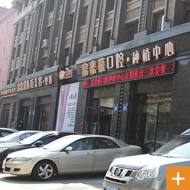
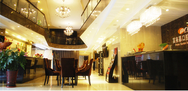
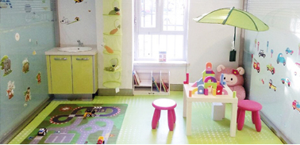
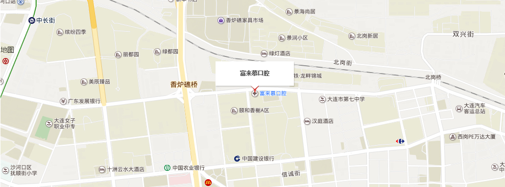

有一个地方，因为山峰迭起的秀丽环境，一群人专于造酒， 造出了全中国最好的酒:又有一群人，来了又走了，创造出了中国的新时代;今天，又来了一群心怀梦想的人， 立志创新、颜富来慕口腔位于大连市西岗区鞍山路与不老街交汇处处于大连市中心地段总面积约为500平方米，是大连投资最大的高档口腔诊所之- -;门诊实行严格的消毒隔离制度和先进的“四手操作服务。提供口腔档案分析，全面的口腔健康规划、专业的导诊服务、就诊的时间提醒;在关注患者牙齿的同时更多的关注患者的就诊感受;



先进数字化诊疗设备让治疗变成一种享受
富来事口眼没有9阿治疗诊室，配备国际先进的诊疗设备，为惠者提供高品师的服务。也为医生的诊疗提供科学。快捷准确的张据，让患者在接受牙齿治疗的同时重成一种享受:
顶级专家团队为患者保驾护航
引进超前的韩国经营理出、多项与国际同步的先进设备和前沿技术，以及大批优秀的医疗，护重和管理人才，充分保障大众口腔健康，赢得了业界内外的一致信任和口碑。院内设有口腔内科,口腔2外科。口腔修复，口腔种植治疗等书色项目。满足不同属次的患者需求

1、公交站:鞍山路站
途径公交车: 1路车、大连火车站-开发区、303路、 34路、 411路、 414路、 4路、 512路、 710路、 7路、大连火车站-夏家河子、祥和花园-胜利桥北
2、 公交站-大同街站
途径公交车: 201路、 405路、41路、 505路、515路、 517路、 527路、528路、532路、 541路、 707路、7路
3.公交站-五一广场站
途径公交车: 11路、 18路、 19路、 201路、 26路、 29路、 303路、 34路、 35路、 405路、 407路、 408路、 409路、 410路、 41路、 43路、 4路、503路、 505路、 515路、 517路、 528路、 532路、 602路、 707路、 710路、 7路、909路、 大连站北-旅顺、大黑石-建设街、祥和花园-胜利桥北